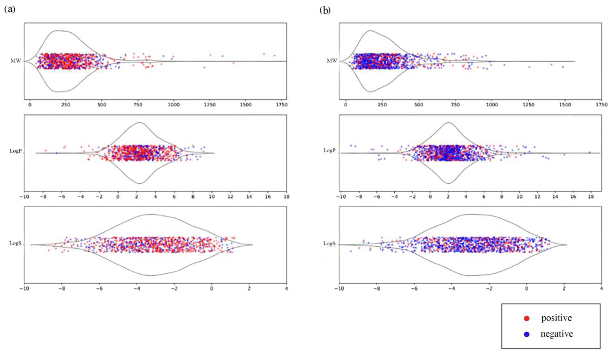
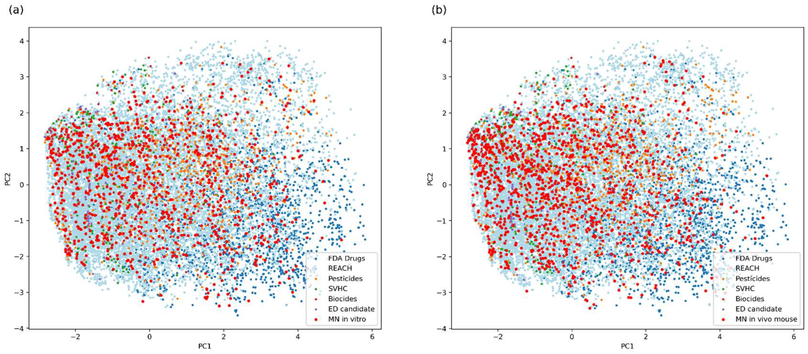
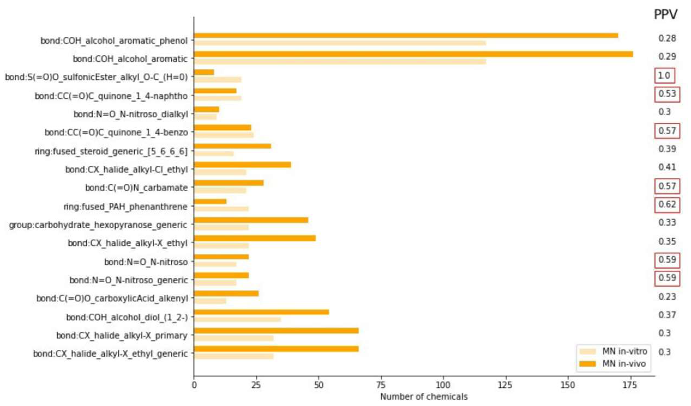
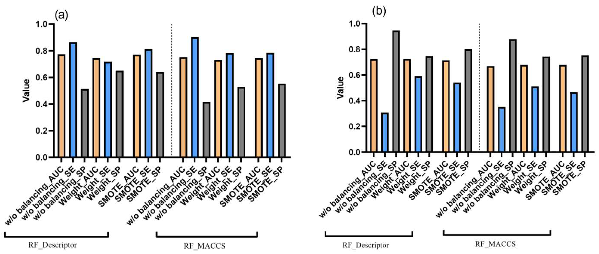
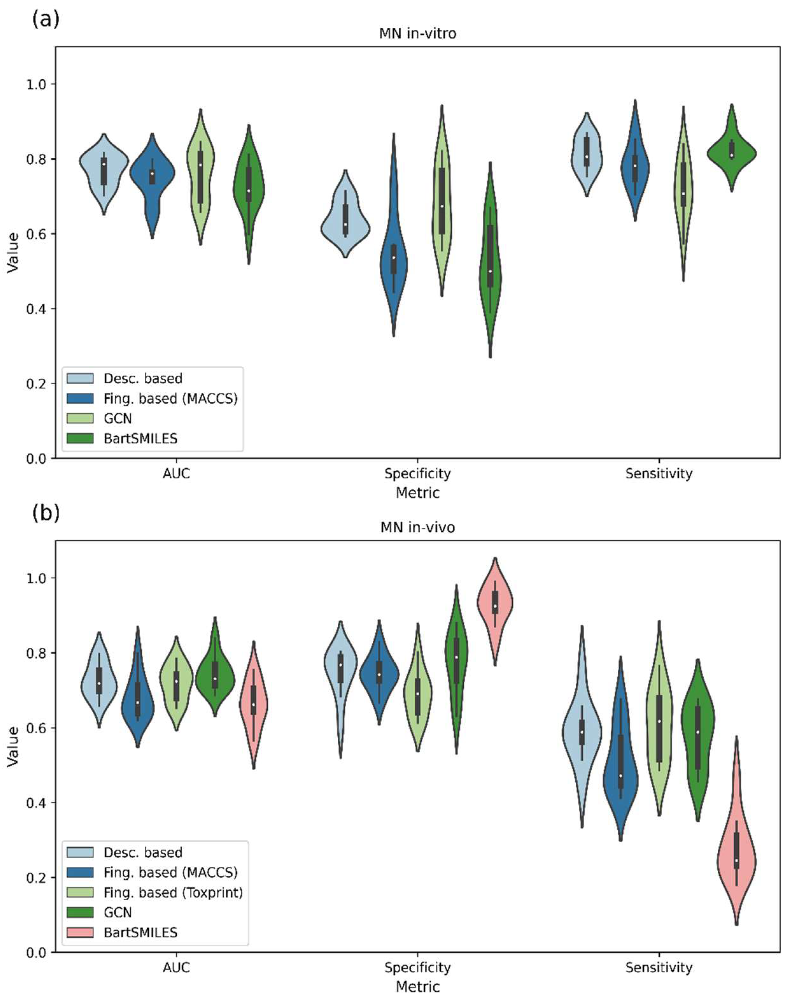

Every new pharmaceutical compound, every industrial chemical, every pesticide that enters the market must be tested for genotoxicity—the ability to damage DNA and chromosomes. Among the most important of these tests is the micronucleus (MN) assay, which detects whether a substance causes chromosomes to break or mis-segregate during cell division. First in cell cultures (in vitro), then in living animals (in vivo), the assay is a gatekeeper between a promising molecule and a regulatory green light.
The problem? These tests are slow, expensive, and consume animal lives. A single in vivo study can take weeks and cost tens of thousands of dollars. With hundreds of thousands of chemicals in commercial use and a growing regulatory backlog, the industry cannot test its way out of the bottleneck with wet-lab experiments alone.
Our team set out to change that. In a study published in Toxics, we built the largest publicly available datasets for both in vitro and in vivo micronucleus assays and trained an ensemble of machine learning models, spanning Random Forests to Graph Convolutional Networks to the BARTSmiles large language model, that can predict a chemical's MN outcome from its molecular structure alone.
Predictive toxicology lives and dies by its data. For the well-studied Ames mutagenicity test, curated datasets with thousands of compounds have driven model accuracy to roughly 80%—approaching the inter-laboratory reproducibility of the assay itself. But for the micronucleus endpoint, the picture was far bleaker. The largest public MN in vitro dataset contained only about 380 compounds. For in vivo, scattered repositories existed but had never been consolidated and cleaned to modern QSAR standards.
We took a two-pronged approach. First, we aggregated data from every major public database we could find: the ISSMIC database, the EURL ECVAM genotoxicity collection, CCRIS, and ChEMBL. Second, and this is where it gets interesting from an ML perspective, we deployed BioBERT, a BERT-based language model pre-trained on biomedical text, to mine 35 million PubMed abstracts for micronucleus assay results that had never been systematically compiled.
The result: curated, de-duplicated, guideline-compliant datasets of 981 chemicals for MN in vitro and 1,309 chemicals for MN in vivo, nearly tripling and substantially extending the previously largest public collections, respectively.

To understand the chemical diversity of what we had assembled, we projected both datasets into PCA space alongside REACH-registered substances, FDA-approved drugs, pesticides, and biocides. The result (Figure 2) confirmed that our datasets cover a vast chemical landscape, critical for building models that generalise to new, unseen compounds rather than memorising a narrow training domain.

Before reaching for gradient boosting, we wanted structural intuition. Using the ToxPrint chemotype system (729 curated chemical features developed for the FDA), we ran enrichment analysis to find substructures statistically over-represented among MN-positive compounds.
For MN in vitro, 18 chemotypes were significantly enriched in the positive class: nitroso groups, steroids, alkyl halides, and polycyclic aromatic hydrocarbon fragments, among others. Compounds carrying two or more of these chemotypes were correctly classified as positives 95% of the time. For in vivo, 40 chemotypes were enriched, but the overlap between the two endpoints was surprisingly small: only four chemotypes appeared in both.

A key finding: of the 18 in vitro–enriched chemotypes, only 7 showed meaningful predictive value for in vivo outcomes (PPV ≥ 50%). The sulfonic acid ester substructure stood out as the single chemotype with strong cross-endpoint relevance (PPV = 100%), consistent with its known DNA-alkylating mechanism. This asymmetry between in vitro and in vivo underscores why you cannot simply use an in vitro screen as a surrogate for in vivo prediction, and why dedicated in vivo models are needed.
We designed a systematic pipeline that explored a wide combinatorial space of representations, algorithms, and data-balancing strategies:
Each compound was encoded in multiple ways: 208 RDKit molecular descriptors (after filtering for collinearity and low variance, reduced via Genetic Algorithm to 17 to 20 features), plus 12 types of molecular fingerprints including MACCS, Daylight, ToxPrint, and ECFP variants at different radii. For graph-based models, molecules were represented as atom-bond graphs directly; for BARTSmiles, the input was the raw SMILES string.
Both datasets are heavily skewed (70% positive for in vitro, 68% negative for in vivo). We benchmarked two strategies: class weighting (adjusting the loss function) and SMOTE (synthesising minority-class samples in fingerprint space). The winner depended on the endpoint: SMOTE gave the best sensitivity/specificity balance for in vitro, while class weighting was superior for in vivo.

We evaluated five model families:
Random Forest (RF), Support Vector Machine (SVM), and XGBoost (XGB), the classical, descriptor/fingerprint-based workhorses of cheminformatics. Graph Convolutional Networks (GCN), learning directly from molecular graphs and sidestepping hand-crafted features. And BARTSmiles, a BART-architecture language model pre-trained on SMILES, representing the frontier of self-supervised chemical representation learning (developed at YerevaNN).
Every classical model was optimised via grid search inside 10-fold cross-validation; GCN and BARTSmiles used Butina scaffold splitting to reduce computational cost while respecting chemical similarity structure.

Several patterns emerged from the cross-validation results:
For MN in vitro, the classical RF model with RDKit descriptors and SMOTE balancing delivered the strongest individual performance (AUC 0.77, sensitivity 0.81, specificity 0.64). BARTSmiles, notably, performed comparably despite receiving no hand-crafted features, only raw SMILES strings.
For MN in vivo, Graph Convolutional Networks took the lead among individual models (AUC 0.74, sensitivity 0.58, specificity 0.77). BARTSmiles struggled here, with sensitivity collapsing to 0.23, suggesting that the pre-training corpus may not capture the subtler biological factors governing in vivo chromosome damage.
The clear winner in both cases was the ensemble model, built by majority voting across the best individual classifiers:
Crucially, the ensemble maintained balanced predictive performance. Previous in vivo models often achieved headline accuracy by correctly predicting the majority class while missing most positives—a dangerous failure mode when the whole point is to catch genotoxic compounds. Our model achieved genuinely balanced sensitivity and specificity for the in vivo endpoint, a meaningful advance over prior work.
For computational toxicologists and drug developers: these datasets and models offer an immediately useful screening tool. The in vitro model, with nearly 80% accuracy, can flag candidate molecules for closer experimental scrutiny early in the pipeline—before committing to expensive wet-lab assays. The in vivo model, while inherently harder, provides the most balanced public predictor to date for mouse micronucleus outcomes.
For ML researchers: this study is a case study in combining NLP-driven data curation (BioBERT for literature mining), classical cheminformatics (fingerprints, descriptor selection, SMOTE), and modern deep learning (GCN, BARTSmiles) into a single, coherent pipeline. The finding that BARTSmiles—a model pre-trained on millions of SMILES—matches traditional methods on one endpoint but fails on another is a reminder that self-supervised pre-training is not a silver bullet; task-specific data quality and biological complexity still matter enormously.
For regulators: as the ICH M7 guideline has already opened the door to in silico methods for mutagenicity assessment, the logical next step is extending computational acceptance to chromosomal damage endpoints. Studies like this one lay the groundwork by demonstrating that curated datasets of sufficient size and diversity can support predictive models that meet reasonable performance thresholds.
Our datasets are publicly available as supplementary material, and BARTSmiles is open-source. We believe this work opens several avenues: expanding datasets with automated literature mining at scale, exploring transformer-based architectures fine-tuned specifically for genotoxicity, and integrating mechanistic knowledge (e.g., DNA-adduct formation pathways) into model architectures. The ultimate goal is a computational safety net that catches genotoxic chemicals before they ever enter a test tube—or an animal.
Khondkaryan, L.; Tevosyan, A.; Navasardyan, H.; Khachatrian, H.; Tadevosyan, G.; Apresyan, L.; Chilingaryan, G.; Navoyan, Z.; Stopper, H.; Babayan, N. Datasets Construction and Development of QSAR Models for Predicting Micronucleus In Vitro and In Vivo Assay Outcomes. Toxics 2023, 11, 785. https://doi.org/10.3390/toxics11090785
Affiliations: Institute of Molecular Biology NAS RA • Toxometris.ai • YerevaNN • Yerevan State University • University of Würzburg